Vanoor — Apple Watch-first running
A serious running watch, already on your wrist. Vanoor puts offline GPX route navigation, structured interval workouts and split-by-split race pacing on the Apple Watch, with the planning done on the iPhone. It has no account and no subscription. I designed, built and shipped both native apps; they have been live on the App Store since September 2026.
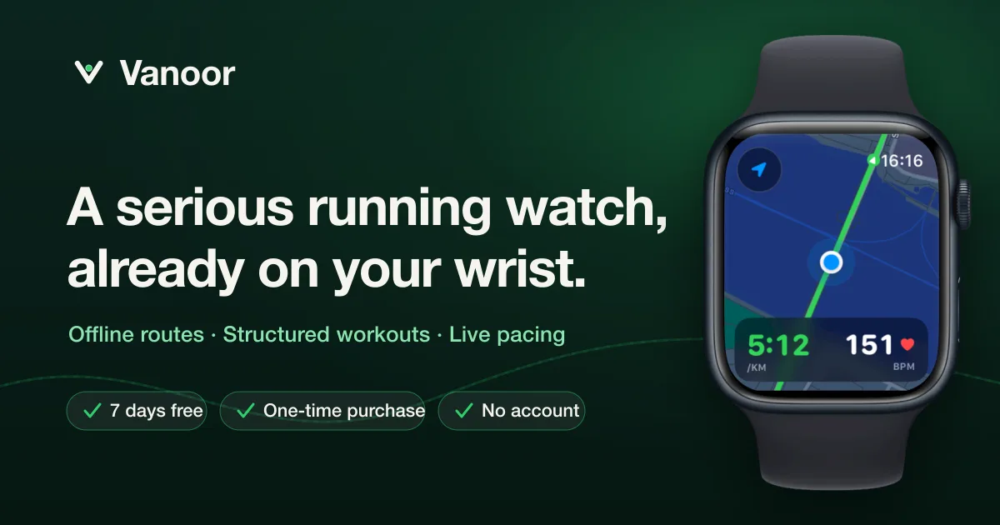
Why build it
The Apple Watch has GPS, a heart-rate sensor, an always-on display and LTE. As running hardware, it's on par with a mid-range Garmin. Apple's own Workout app, though, can't follow a route you planned, can't run a proper interval session with pace targets, and can't tell you whether you're on plan for a goal time.
Many runners end up buying a second watch just for that. The alternatives on the App Store tend to be subscription-based, account-based or cluttered with social features.
Vanoor's premise is simple: Apple Workout simplicity, plus GPX route following, configurable running screens and race pacing. You plan on the iPhone, run with the Watch, and the data goes to Apple Health and Strava. There's no account, no server and no subscription.
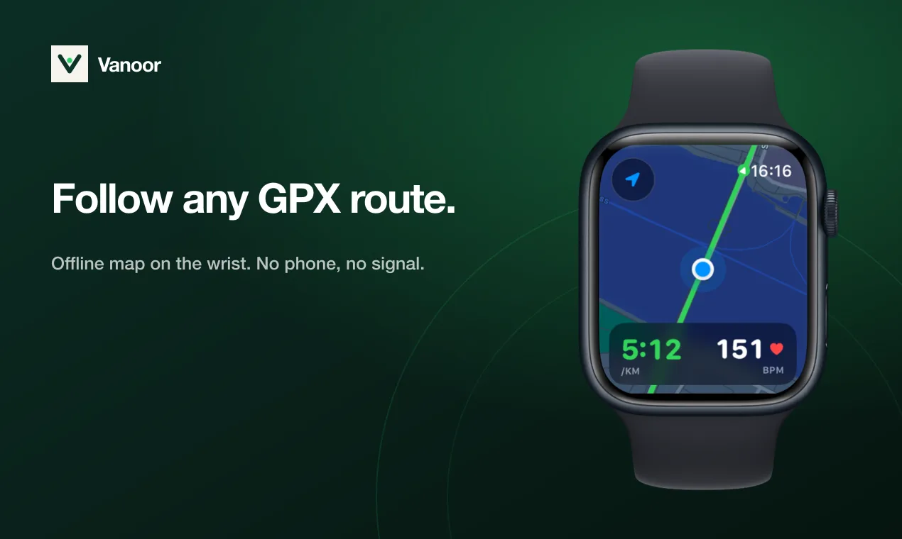
Before the run: routes
Bring any GPX, or draw one
Routes come in from anywhere a GPX file can be opened: Files, Mail, Safari, AirDrop, or a race organiser's website. Vanoor registers itself as a GPX handler, so "Open in Vanoor" works from the system share sheet.
For routes that don't exist yet, the route planner lets you tap to draw. MapKit snaps each leg to streets and paths, with live distance and kilometre markers. Routes are stored on the device and synced through the user's private iCloud with CloudKit.
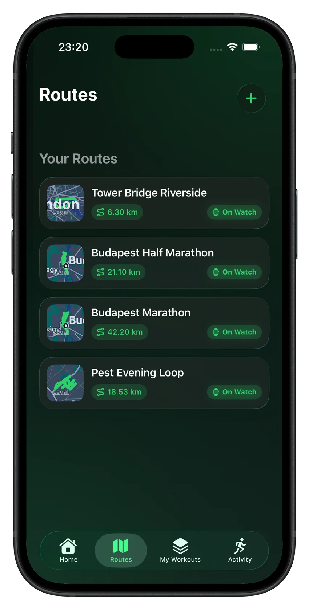
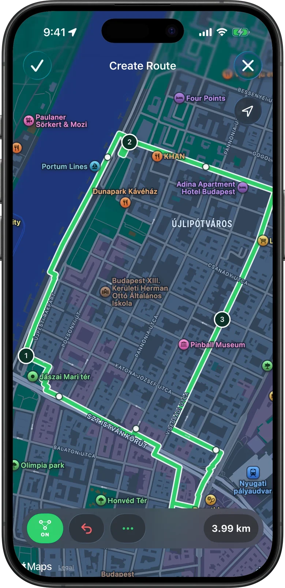
On the wrist
An offline map on a watch that has no map view
watchOS has no offline MKMapView, and running without a phone means running without signal. So the iPhone does the heavy lifting. Before the run, it renders a corridor of map tiles along the route with MKMapSnapshotter (zoom 13–16, at most 600 tiles) and sends them to the Watch as a single bundle. The Watch then draws them on its own Web Mercator canvas.
The route itself travels over WatchConnectivity in a versioned envelope with a checksum, so a half-transferred or outdated file is rejected before it can mislead someone at kilometre 25. If you drift more than 40 m off the course, the Watch taps your wrist, and repeats every 30 seconds until you're back.
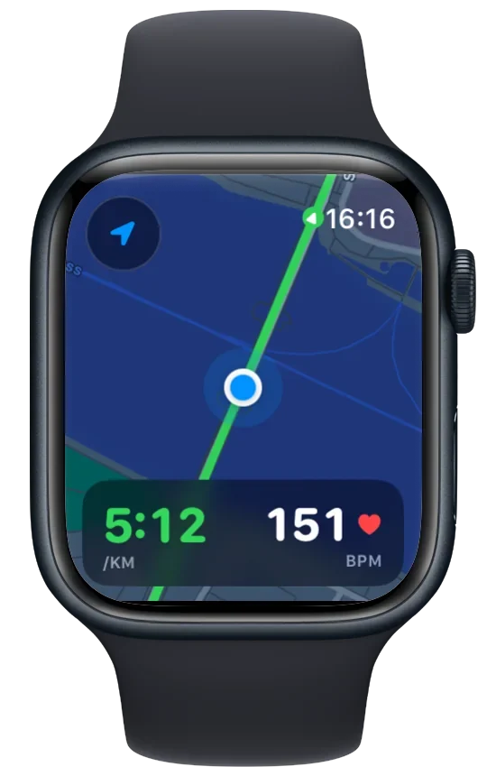
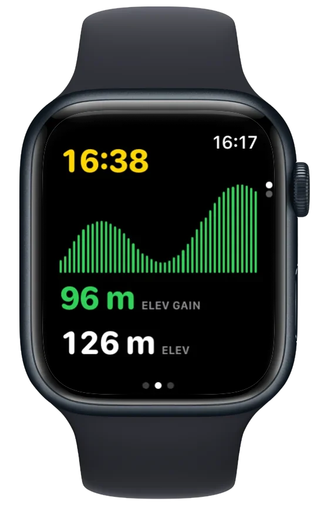
Fifteen screens, four numbers each
The Watch app copies Apple Workout's layout, because runners already know it: controls on the left, swipeable data pages in the middle, Now Playing on the right. There are 15 page types: Classic, Big Metric, Pace, heart-rate zones, running dynamics, elevation, calories, effort, map, pacer and a cadence metronome.
Every custom screen is limited to four metrics, and the iPhone shows a miniature preview while you build it. Information density on a 45 mm display is a design decision, not a settings problem.
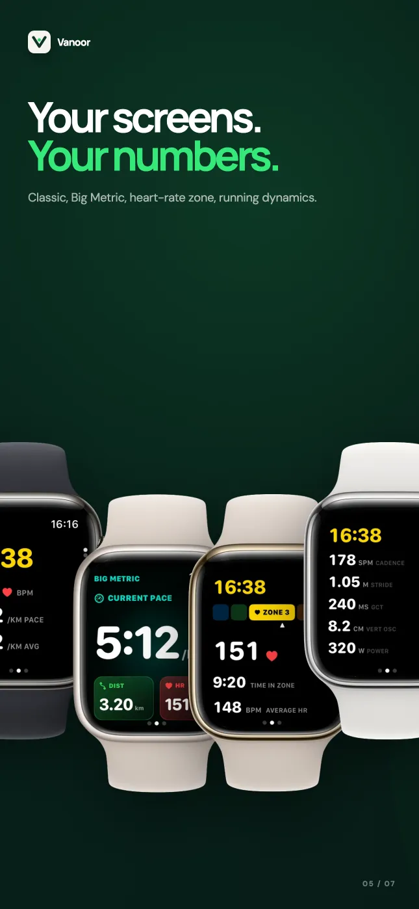
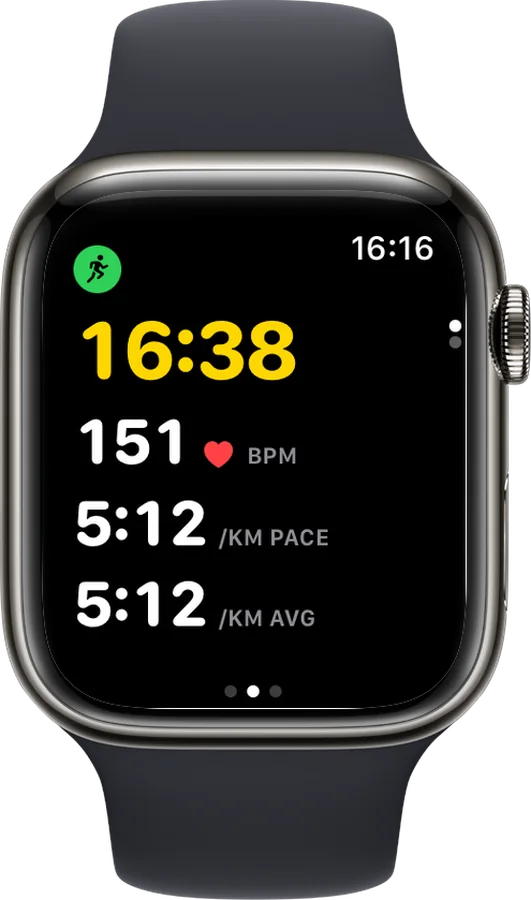
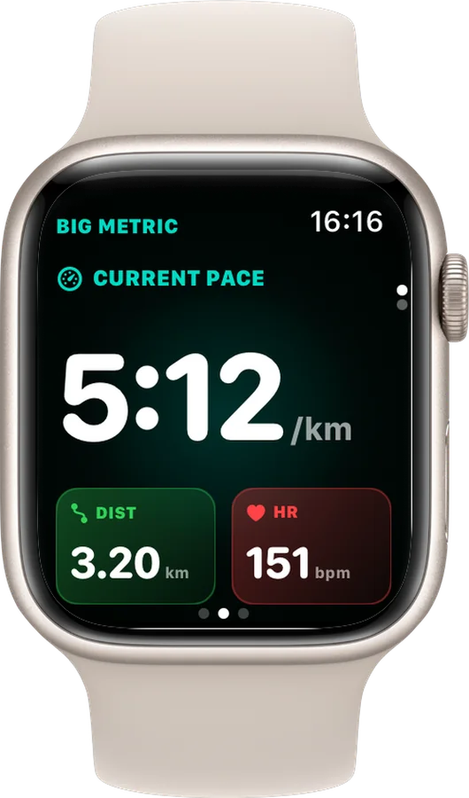
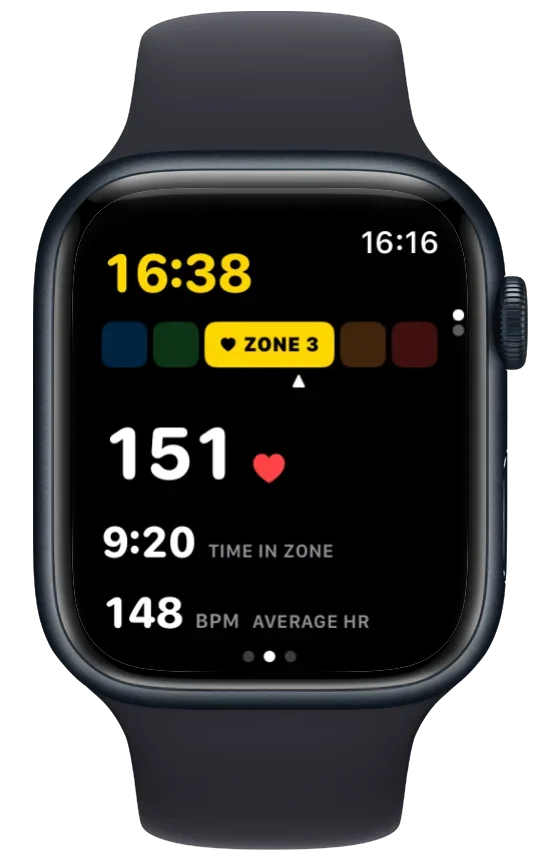
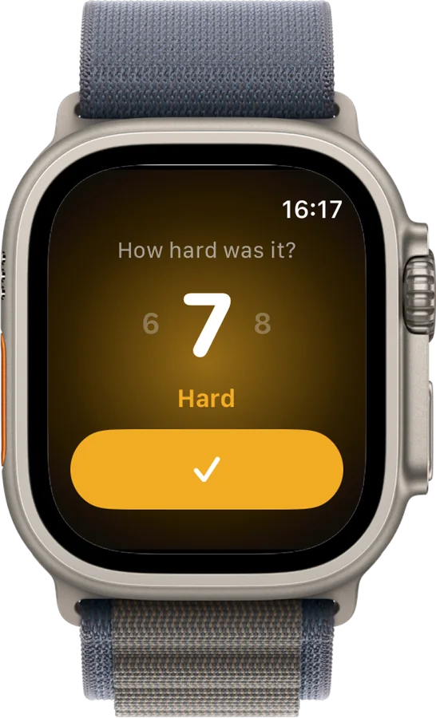
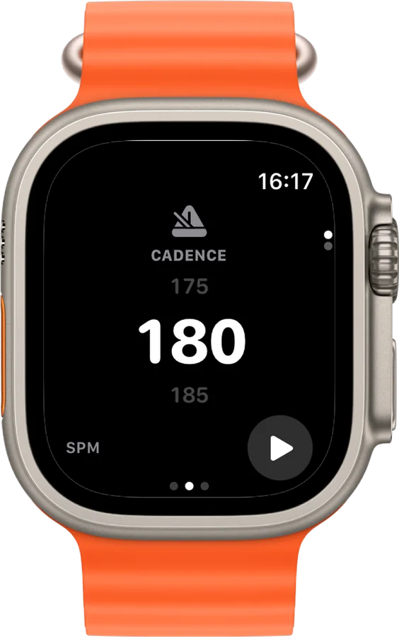
Race pacing
A goal time becomes a plan
The race strategy builder takes a distance, a goal time and a number of splits, and produces an even, negative or positive split plan. You can drag the diagram directly to shape it. A negative split, where you start controlled and finish faster, is what most coaches recommend and what most runners fail to do on race day.
On the Watch, the Pacer page shows the current split and its target pace band, and tells you when you drift out of it. Preparation turns into one clear decision at the moment you need it: speed up, hold, or back off.
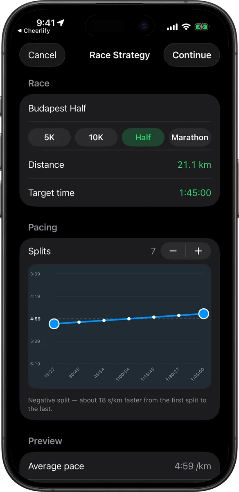
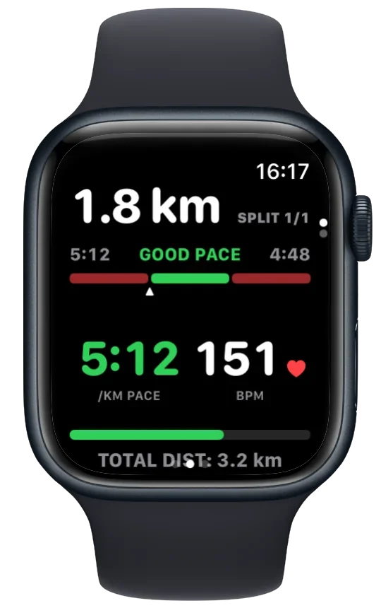
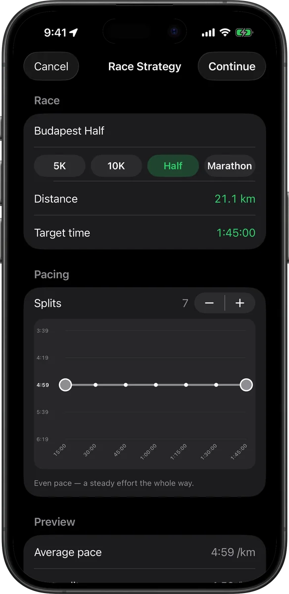
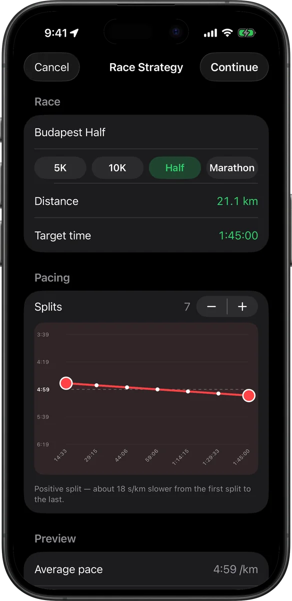
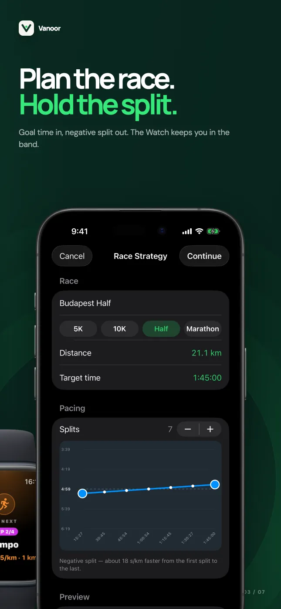
Structured workouts
Build the session once
The workout builder models a session as a list of splits. Each split is set by distance or time and has a target: a pace band (±15 s), a heart-rate zone (Z1–Z5), a custom heart-rate range, or simply "conversational". Splits can be wrapped in repeat blocks (1–30 reps). Nutrition cues can be pinned by position, time or distance, so "gel at 45 minutes" is part of the plan, not something to remember.
Planned runs upload to Strava with the workout's name and a readable description of the structure, so training partners can see what the session actually was.
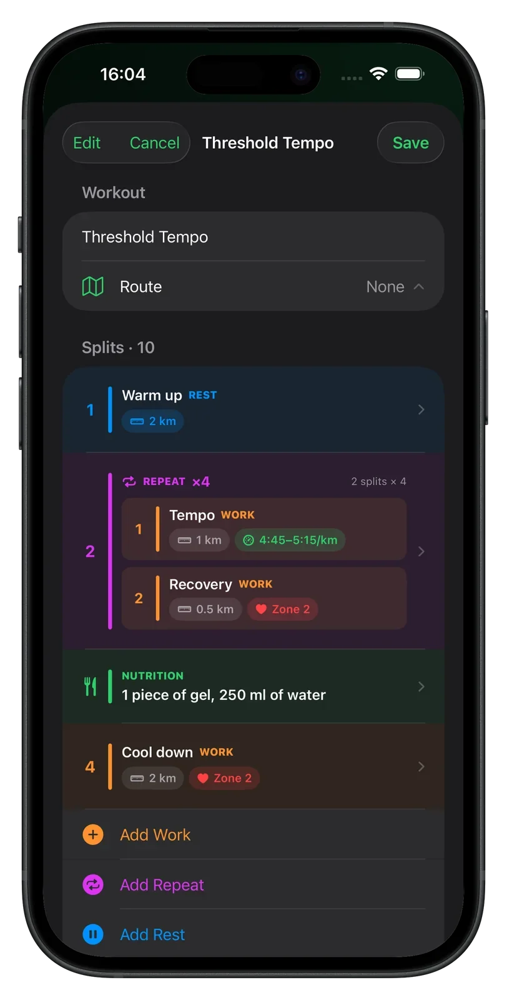
Haptics you can feel mid-effort
In a hard interval you don't look at your wrist. Real runs showed that one buzz at the end of a split gets missed. The split-end countdown now starts with a heads-up 100 m or 15 s before the boundary, then gets faster: single, double, then triple knocks. Work, recovery and fuel each have their own full-screen card, one card per boundary, answering what now, how long, what next.
Pace outside the band, heart rate outside the zone and distance milestones each have their own alert pattern, so the wrist tells you which problem it is before you look.
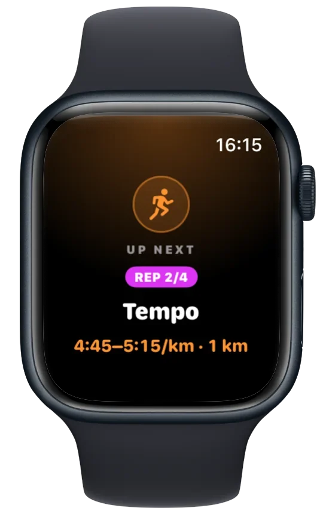
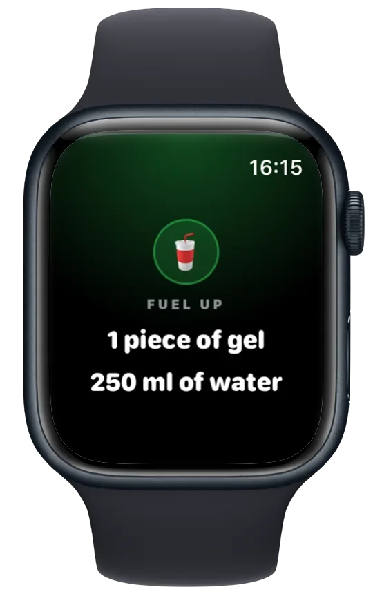
After the run
Apple Health is the source of truth
The Watch records with HKWorkoutSession, HKLiveWorkoutBuilder and HKWorkoutRouteBuilder, so every run lands in Apple Health with its GPS route, like a native workout. The iPhone reads it back: Swift Charts for pace, heart rate, elevation and running dynamics (power, stride, vertical oscillation, ground contact), with scrubbing, kilometre pins on the map and a per-km split table.
The data isn't locked in. FIT and GPX files are encoded on the device, with heart rate included, and shared with the system share sheet. Because Strava ignores third-party workouts in Apple Health, Vanoor uploads to Strava directly through OAuth, with tokens kept in the Keychain.
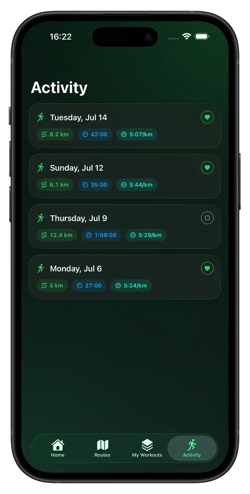
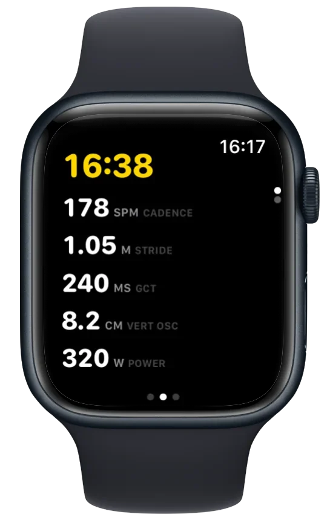
Engineering notes
Most of the work in a running app happens where the screenshots can't show it. A few problems from the build log:
| Problem | What happened | Fix |
|---|---|---|
| Loop routes | On a loop course the first GPS fix matched the finish line, so the run showed 100% complete at the start. | The first fix picks the earliest plausible match. Later matches are limited to a window from just behind to ~300 m ahead, with a distance + deviation cost. Covered by regression tests. |
| Auto-pause | During a 35 km run, three over-eager paths (a 1 s dwell time, a pedometer "stationary" event, stale speed read as zero) paused the workout and lost ~1.6 km and ~11 minutes. | A two-signal state machine where missing data counts as "inconclusive", not "stopped". The affected FIT files were rebuilt from raw data. |
| Battery | A long run drained too much battery through constant UI updates and route writes. | Breadcrumb snapshots instead of a published array, batched HealthKit route writes, a cached map projection, a 12 FPS progress ring, and Precise / Normal / Battery Saver GPS profiles. |
| Chest straps | Pairing a Bluetooth strap inside the app competed with the Watch's own Bluetooth stack. | I removed the in-app pairing. Straps pair in watchOS Settings and their heart rate arrives through HealthKit: less code and more reliable. |
| Always-on | The rest countdown ring froze when the wrist was lowered, because the dimmed state throttles animations. | Drive it from a periodic TimelineView instead of an implicit animation. |
Architecture. Both apps are SwiftUI and share one Swift core, compiled into the iOS, watchOS and test targets. It holds GPX parsing, route progress, route simplification, the auto-pause state machine, the alert engine, split and lap calculations, the FIT/GPX encoders, tile math and the CloudKit merge logic (pending-change queue and tombstones for deletes). Roughly 32k lines of Swift in total, with 303 unit tests guarding the rules that matter when nobody is looking at the screen.
Shipping it
Business model. Free download, a 7-day trial, then a one-time $9.99 unlock via StoreKit 2, with Family Sharing. The trial clock is stored in the Keychain, so reinstalling doesn't reset it. When the trial ends, the app doesn't lock you out of your data: history, routes and exports stay available, and only starting a new run on the Watch requires the unlock.
Go-to-market. I produced the App Store screenshot set, the Product Hunt gallery, a landing site with pace calculators and running guides, and first-party attribution. UTM tags on vanoor.app become App Store campaign tokens, and cookie-less analytics run on my own server. That way App Store Analytics shows which channel actually produced a download.
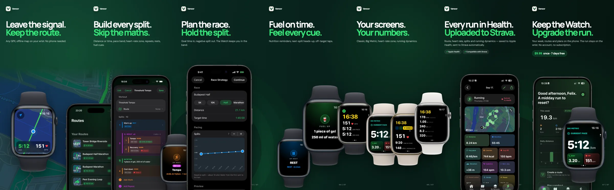
Timeline. First commit on 7 July 2026. A web-first version was dropped the next day in favour of native apps only. The first TestFlight build came on 15 July, the Strava integration in August, and a 35 km field test and battery pass in September. The app was approved and went live on the App Store on 23 September 2026, as version 1.0.
What I learned. On a watch, reliability is the interface. A false auto-pause or a missed haptic costs more trust than any visual polish can win back. The best decisions in this project were often removals: the web platform, in-app Bluetooth pairing, and every metric that didn't earn its place on a 45 mm screen.
Run it on your own wrist
Requires iPhone with iOS 17+ and Apple Watch with watchOS 10+. Free for 7 days, then a one-time purchase.